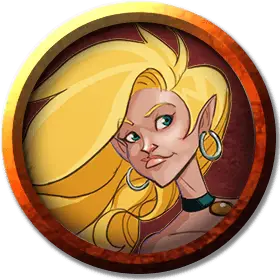

Брахма Лутьер
Brahma Lutier
Средний Гуманоид (Эльфийка), нейтральный, именной НИП

Класс Доспеха 12
Хиты 33 (6к8 + 6)
Скорость 30 футов
| мод | спас | ||
|---|---|---|---|
| СИЛ | 12 | +1 | +1 |
| ЛОВ | 15 | +2 | +2 |
| ТЕЛ | 12 | +1 | +1 |
| мод | спас | ||
|---|---|---|---|
| ИНТ | 11 | +0 | +0 |
| МДР | 13 | +1 | +1 |
| ХАР | 16 | +3 | +3 |
Навыки Восприятие +3, Выступление +5, Убеждение +5
Чувства пассивное Восприятие 13
Языки Общий, Эльфийский
Опасность 2 (450 опыта)
Бонус мастерства +2
Особенности
Наследие фей. Брахма совершает с преимуществом спасброски от очарования, и магия не может её усыпить.
Использование заклинаний. Брахма является заклинательницей 4-го уровня. Её базовой характеристикой является Харизма (Сл спасброска от заклинания 13, +5 к попаданию атаками заклинаниями). У неё подготовлены следующие заклинания барда:
• Заговоры (неограниченно): волшебная рука [mage hand], сообщение [message], злая насмешка [vicious mockery];
• 1 уровень (4 ячейки): очарование личности [charm person], героизм [heroism], невидимое письмо [illusory script], усыпление [sleep], невидимый слуга [unseen servant];
• 2 уровень (3 ячейки): облако кинжалов [cloud of daggers], невидимость [invisibility].
Насмешка (2/день). Брахма может бонусным действием в свой ход выбрать одно существо в пределах 30 футов. Если цель может слышать Брахму, то цель должна преуспеть в спасброске Харизмы Сл 12 или до конца следующего хода Брахмы будет вынужден совершать с помехой все проверки, броски атак и спасброски.
Действия
Боевая лютня. . Рукопашная атака оружием: +4 к попаданию, досягаемость 5 футов, одна цель. Попадание: 5 (1к6 + 2) рубящего урона.
Песня подчинения (3/день). Брахма нацеливается на одно существо, которое может видеть или слышать её, которое должно преуспеть в спасброске Мудрости Сл 13, иначе станет очаровано ею на 1 минуту. Цель может повторять спасбросок в конце каждого своего хода, оканчивая на себе эффект в случае успеха. Этот спасбросок совершается с помехой, если быть очарованным Брахмой - это то, чего цель открыто или тайно желает. В течение 1 часа после окончания эффекта очарования цель получает помеху на проверки Интеллекта, Мудрости или Харизмы, совершаемые для противостояния Брахме.
Описание
Формально бывший член команды "Б", Брахма Лутьер - одаренный картограф, шпион и трубадур. Обученная, по крайней мере, последнему из этих занятий Одрой Куртье (женой Профи Драна и совладельцем гостиницы Dran & Courtier в Красной лиственнице), специальность Брахмы - песня подчинения, которой, по легенде, трудно противостоять.
Говорят, что её уход на пенсию связан с размолвкой с мужем Дубом Меткобьющий, и Брахма уже некоторое время работает в качестве агента одиночки. Известная своей личностью, которая в равной степени кровожадна и жизнерадостна, она использует в бою инструмент спроектированного драконорожденными. Этот уникальный предмет, известный как боевая лютня, изобилует скрытыми хранилищами и грозным вооружением.